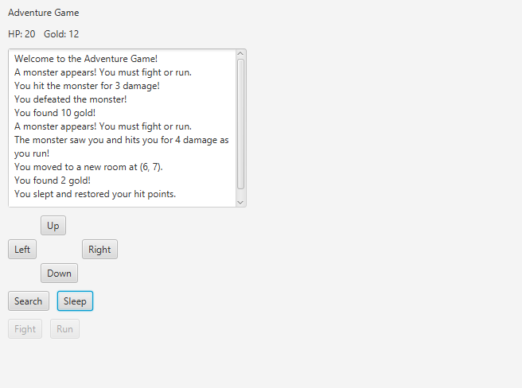

Adventure Game (Java)
An interactive grid-based adventure game using Java, JavaFX, and Scene Builder. Designed and implemented an object-oriented architecture with custom classes. Developed the UI in FXML and integrated it with backend logic through a JavaFX controller, handling event-driven input, scene updates, game state transitions, and combat interactions.